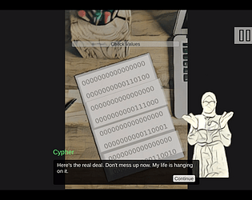
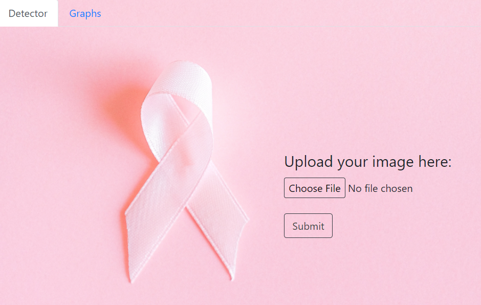

Hello! My name is Nour Sleiman and I'm a senior at CUNY-Brooklyn College graduating in May 2022. My major is Computer Science with a double minor in Multimedia Computing and History. I like to dabble in all things computer science and am a big fan of video games.
CUNY-Brooklyn College
Bachelor of Science in Computer Science
GPA:3.99/4.0
Learn in-demand technologies like Python 3, Jupyter Notebooks, Pandas, Numpy, Scikit-learn, and SQL as well as industry best practices for exploratory data analysis (EDA), feature engineering, data collection and processing, statistical modeling, data visualization, machine learning techniques, data science process, and big data
|  |
Unicode Encoding
|
|  |
Breast Cancer Detection
|
Java, Python, HTML, CSS, JavaScript, C#, C++
Windows, Git/Github, Unity
Email: noursleiman07@gmail.com